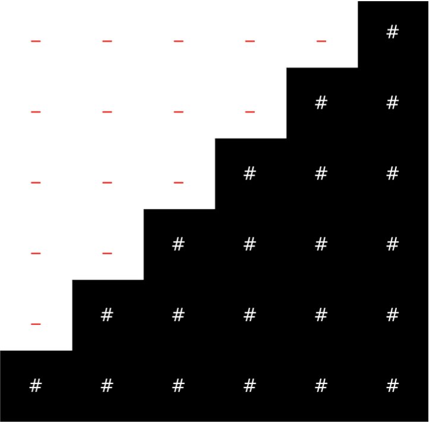

In the land of Pixeloria, the kingdom is designing a new fortress map. The architects have a special requirement: each fortress blueprint must have a structured layout where the lower right section, from the diagonal to the bottom-right corner, is reinforced with stone walls (#), while the rest remains open space (_).
The engineers are struggling to generate this pattern for different-sized fortresses, so they need your help to automate the process. Your task is to create a program that generates an n×n grid based on this rule.
You are given an integer n (1 ≤ n ≤ 20) representing the size
of a nxn grid.
n×n grid where:
#._.
Input 1
3
Output 1
__# _## ###
Input 2
5
Output 2
____# ___## __### _#### #####